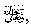

Amongst the nights of Ramadhaan, there is one called ‘Laylatul Qadr,’ a night of great blessings. The Qur-aan-e-Kareem describes it as being greater in blessedness and rewards than a thousand months which means that it is greater than eighty three years and four months.
Fortunate is that person who gets the full blessings of this night by
spending it in ibaadah
of Allah 